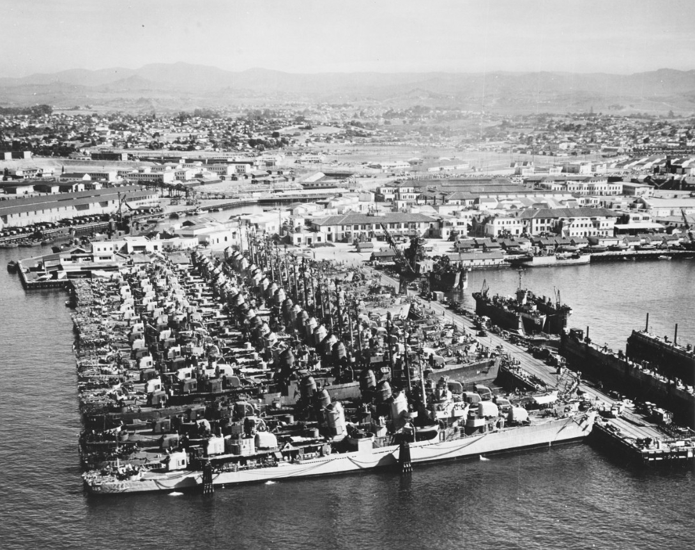

Causes and Start
of World War II
On September 1, 1939, twelve-year-old Janina Bauman was eating breakfast in Warsaw, Poland, when she heard a sound she did not recognize: bombs. The German air force had begun bombing the city before dawn. Within hours, tanks were crossing the Polish border. Janina grabbed her little sister's hand and ran to the basement. She would not feel safe again for six years.
World War II did not start by accident. It built up slowly over an entire decade. Three countries decided that they wanted more territory, and the rest of the world kept saying yes. Leaders who might have stopped the violence kept hoping the problem would go away. By the time they realized their mistake, the war machine was already rolling.
This is the story of how a second world war became inevitable, one bad decision at a time.
Three Aggressors: Germany, Italy, and Japan on the Move
By the early 1930s, three countries were building empireEmpire: a group of nations or territories under the control of one powerful country or ruler, often taken by force.s through military force. They were driven by different ideologies and different grievances, but they shared one belief: their nation deserved more land, more resources, and more power. The rest of the world would have to get out of the way.

Germany under Adolf Hitler moved first in Europe. After taking power in 1933, Hitler immediately began rebuilding Germany's military in direct violation of the Treaty of Versailles. The treaty had banned Germany from having a large army; Hitler ignored it. In 1936 he sent troops into the Rhineland, a strip of German territory that had been demilitarized after WWI. France and Britain did nothing. Hitler learned that the democracies would not fight back.
Emboldened, Hitler moved faster. In March 1938 he annexed Austria, meaning he absorbed it into Germany by force and threat. This was called the Anschluss. Hundreds of thousands of Austrians cheered in the streets; many genuinely wanted unification with Germany. But the Austrian government had no real choice. Jewish Austrians, and those who opposed the Nazis, were immediately arrested. Then Hitler turned his eyes to Czechoslovakia.
Meanwhile, in Asia, Japan had been building its own empire since 1931. Japan invaded Manchuria, a northeastern region of China, and turned it into a puppet state. The League of Nations condemned the invasion. Japan walked out of the League and kept Manchuria. In 1937 Japan launched a full-scale war against China. During the capture of the Chinese city of Nanking in December 1937, Japanese soldiers massacred an estimated 200,000 to 300,000 Chinese civilians and prisoners of war in six weeks. Historians call it the Rape of Nanking. It is one of the worst atrocities of the twentieth century.
| Country | Leader | What They Wanted | What They Did in the 1930s |
|---|---|---|---|
| Germany | Adolf Hitler | Reclaim territory lost in WWI; create a German empire in Eastern Europe | Remilitarized (1935); occupied Rhineland (1936); annexed Austria (1938); seized Czechoslovakia (1938–1939) |
| Italy | Benito Mussolini | Build a modern Roman Empire in Africa and the Mediterranean | Invaded Ethiopia (1935); invaded Albania (1939); joined the Axis alliance with Germany |
| Japan | Emperor Hirohito / Military leadership | Dominate East Asia and the Pacific; secure oil, iron, and raw materials | Invaded Manchuria (1931); full war on China (1937); Rape of Nanking (1937); joined Axis (1940) |
In 1936, Germany, Italy, and Japan formalized their alliance. They called themselves the Axis powersAxis powers: the alliance of Germany, Italy, and Japan during World War II, who fought together against the Allied nations.. The three countries had agreed to cooperate and to support each other if any of them was attacked. The world now faced a coordinated threat on two continents and the Pacific Ocean simultaneously.

Italy's aggression in Africa showed the world exactly what was coming: in 1935, Mussolini's forces invaded Ethiopia using chemical weapons against soldiers equipped with spears. The League of Nations voted to impose economic sanctions on Italy. They were weak and incomplete. Italy kept Ethiopia. The message to every aggressive nation was the same: the international community will talk and do very little.
The Appeasement Trap: Giving Hitler What He Wanted

The democracies of Europe, especially Britain and France, were terrified of another world war. They had just lived through WWI, which had killed seventeen million people. Their militaries were underfunded. Their populations were exhausted. They chose a strategy called appeasementAppeasement: the policy of giving an aggressive nation what it demands in hopes that it will stop making more demands and avoid war.: give Hitler what he asks for, and maybe he will stop asking.
The clearest example came in September 1938. Hitler demanded the Sudetenland, a German-speaking region of Czechoslovakia. Czechoslovakia refused to give it up. Britain and France were treaty-bound to defend Czechoslovakia. But instead of standing firm, British Prime Minister Neville Chamberlain flew to Munich to negotiate with Hitler directly. The Czechoslovakian government was not even allowed in the room.
Chamberlain, French Premier Edouard Daladier, Mussolini, and Hitler signed the Munich Agreement on September 29, 1938. They gave Hitler the Sudetenland. In exchange, Hitler promised this was his final territorial demand. Chamberlain flew home waving the signed paper and told reporters it meant "peace for our time." The crowd at the airport cheered.
Winston Churchill, a British member of Parliament, was not cheering. He stood up in the House of Commons the next day and delivered a verdict that history would prove correct. He called the Munich Agreement a total defeat for Britain without firing a single shot. He warned that it had only increased Hitler's appetite.
- Question 1: Meaning In your own words, what is Churchill saying about Chamberlain's decision at Munich? What does "dishonour" mean in this context?
- Question 2: Connect to the EQ How does appeasement help explain how Hitler was able to build an empire before anyone stopped him? Use at least one specific example from the lesson.
Churchill was right. In March 1939, just six months after the Munich Agreement, Hitler broke his promise and seized the rest of Czechoslovakia. Britain and France had given him what he wanted and gotten nothing in return. They finally announced that if Germany attacked Poland, they would declare war. Hitler did not believe them.
The strategy of appeasement is still debated by historians today. Some argue Chamberlain was buying time for Britain to rearm. Others argue he genuinely believed Hitler was a reasonable man who could be satisfied. Both things were probably true, and both things were catastrophically wrong.

The Stalin-Hitler Pact: The Deal That Shocked the World
Through the 1930s, most people assumed that if a war started, the Soviet Union would fight against Nazi Germany. Stalin and Hitler despised each other. Communism and fascism were supposed to be mortal enemies. Both sides called the other dangerous. Then, on August 23, 1939, the world woke up to one of the most shocking agreements in modern history.

The Nazi-Soviet Non-Aggression Pact, also called the Molotov-Ribbentrop Pact, stated that Germany and the Soviet Union would not attack each other. On the surface, it looked like a simple peace agreement. But hidden inside was a secret additional protocol: Germany and the Soviet Union had privately agreed to divide Eastern Europe between themselves. Poland would be split in half. The Baltic states of Estonia, Latvia, and Lithuania would go to the Soviet Union. Finland would go to the Soviets as well.
Stalin's reasons were coldly practical. He did not trust Britain and France, who had excluded the Soviet Union from the Munich negotiations. He believed a war between Germany and the Western democracies would exhaust all of them and leave the Soviet Union safer. He also wanted time to rebuild the Red Army, which he had severely weakened through the Great Purge by executing thousands of his own military officers.
Hitler's reasons were equally calculated. He had always planned to eventually conquer the Soviet Union and enslave its people for German expansion eastward. But he needed to avoid fighting on two fronts at the same time. By neutralizing Stalin first, he could attack Poland, France, and Britain without worrying about Russia. He planned to deal with Stalin later.
The pact removed the last obstacle to Hitler's aggressionAggression: the use of military force to attack or invade another country without being provoked first.. Eight days after the signing, on September 1, 1939, Germany invaded Poland from the west. Sixteen days after that, the Soviet Union invaded Poland from the east. Poland was crushed between them in less than a month.
While Europe descended into war, the United States stayed out. American isolationismIsolationism: the foreign policy belief that a country should avoid getting involved in other nations' conflicts and focus on its own affairs. was powerful throughout the 1930s. Congress passed a series of Neutrality Acts between 1935 and 1937 that banned American weapons sales to nations at war. Many Americans remembered WWI and had no desire to send their sons to fight in another European conflict. President Franklin Roosevelt knew Britain needed help, but he could not move faster than American public opinion would allow. That would change on December 7, 1941.

The War Begins: From Poland to Global Conflict
Two days after Germany invaded Poland, Britain and France kept their promise and declared war on Germany. September 3, 1939. World War II had officially begun. But declaring war and actually stopping Germany were very different things. Britain and France had no way to reach Poland quickly, and German forces moved faster than anyone expected.
Germany invades Poland using Blitzkrieg; a new form of warfare combining tanks, aircraft, and infantry moving at overwhelming speed. Warsaw is bombed on the first day.
Britain and France declare war on Germany. The Commonwealth nations of Australia, Canada, New Zealand, and South Africa follow. World War II is officially declared.
The Soviet Union invades Poland from the east, as secretly agreed in the Molotov-Ribbentrop Pact. Poland is now being crushed from both sides.
Warsaw surrenders. Poland is divided between Germany and the Soviet Union. Roughly 1.8 million Polish civilians will be sent to Siberian labor camps by the Soviets. Nazi occupation of western Poland begins immediately.
Germany conquers Denmark, Norway, Belgium, the Netherlands, and France in less than three months. The speed stuns the world. Britain stands almost alone.


Hitler deliberately chose the armistice location as a humiliation: the same railway car in the same forest clearing at Compiègne where Germany had surrendered to France in November 1918. He was reversing the shame of WWI in a single symbolic gesture. The French officers who signed the surrender in June 1940 were sitting in the same seats as their fathers had sat in 1918.
The United States watched from a distance, deeply divided about getting involved. Isolationist groups like America First held massive rallies arguing that the war was Europe's problem. Others, including Roosevelt, pushed for ways to help Britain short of entering the war directly. In 1941, Congress passed the Lend-Lease Act, allowing the U.S. to supply war materials to Britain and later the Soviet Union without technically entering the conflict. American isolationism was slowly breaking down, but it would take Pearl Harbor to end it completely.

As Hitler moved across Europe and Japan expanded across Asia, San Diego was already transforming into one of the most important military cities in the United States. The Pacific Fleet maintained a major presence in San Diego Bay, and Naval Air Station North Island on Coronado Island was a critical hub for the aircraft carriers that would define the coming Pacific War.
When war with Japan began in December 1941, San Diego became the primary embarkation point for hundreds of thousands of troops heading to the Pacific theater. The city's population doubled in three years. The isolationism that had kept America out of the war until Pearl Harbor meant that when the U.S. finally entered, cities like San Diego had to absorb a military mobilization of staggering speed and scale.

- "Ukraine invasion: Is this 1938 all over again? Historians weigh in" — BBC
- "Historians see echoes of 1930s appeasement in Russia's war on Ukraine" — NPR
- "The Appeasement Debate Returns: China, Taiwan, and Hard Choices Ahead" — Foreign Policy
When Russia invaded Ukraine in February 2022, historians immediately began drawing comparisons to the 1930s. An authoritarian government claiming it was "protecting" Russian-speaking people in a neighboring country; a democratic world debating how much to resist; a question of whether supplying weapons is involvement. The words "appeasement" and "Chamberlain" appeared in newspapers and political speeches within days. The argument Churchill made in 1938 is still being made today, word for word, about different countries on the same continent.
If you had been a British voter in 1938, after watching Germany take Austria and the Sudetenland without a fight, would you have supported Chamberlain's choice to negotiate at Munich, or Churchill's call to resist? And knowing what you know now: does that change your answer?